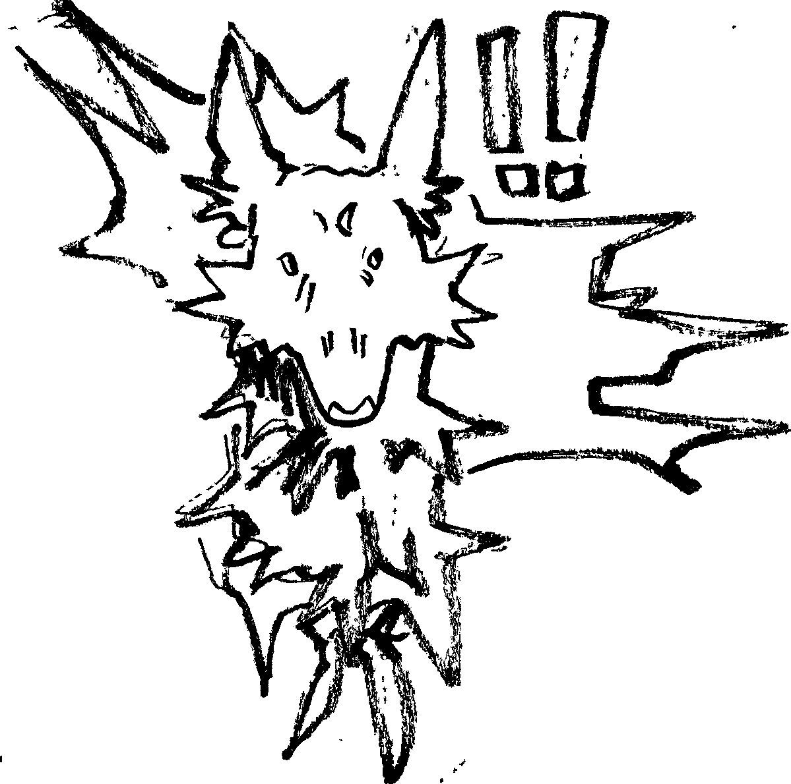

Unlucky
I’m not fearful easily, I don’t think I am. But I think that bad things easily happen. Am I just unlucky?
Unlucky is losing your best friend. No words. No traces. Nothing. Can’t say goodbye.

Or maybe I’m not unlucky. I did find her. Didn’t get to hold her paw. But I found her. And soon we can talk again and laugh and smile and everything will be the same again.

“You stare at things for a long time don’t you.”